10 Marketing Concepts
In this chapter, we explore some of the key marketing concepts that you may find helpful in analyzing the client’s business problems. In marketing courses, client’s business problem will relate to its marketing issues. Therefore, invariably so, you need to understand the market and its key players to explore the assigned business problems appropriately.
A market is a private economic structure that facilitates production and exchange in the economy. There are three types of primary markets: 1) the labor market (market for workers), 2) the capital or finance market (market for loans, stocks, and bonds), and 3) the market for goods and services. In marketing, we deal with the third kind of market, which we will call the marketing environment.
Figure 10.1 captures a general marketing environment and its key players.
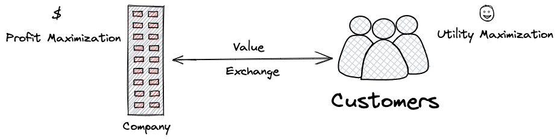
A company in a marketing environment is involved in production of goods and services. Sometimes it is also referred to as a firm or a producer or an organization or a startup or an entrepreneur. Whenever we talk about a company in a marketing environment, our implicit assumption will be for-profit company whose main objective is to maximize profit.1
The social responsibility of business is to increase its profits.
– Milton Friedman (1970)
Profit is the amount left after paying business expenses.
\[ \text{Profit} = \text{Revenue} - \text{Cost}. \] Cost has two components: variable and fixed. Thus,
\[ \begin{align} \text{ Profit } = & \text{ Revenue } - \text{ (Variable Cost + Fixed Cost) } .\\ \end{align} \]
Revenue and variable cost depend on unit price, unit cost, and quantity. Let \(\pi\) denote the profit, then,
\[ \begin{align} \pi = & (p \times Q) - (c \times Q + FC) .\\ \end{align} \]
The quantity produced by the company depends on two factors: \(M\), market size (expressed in number)2 and \(S\), market share (expressed in percentage). Thus, the above formula can be written down as:
\[ \begin{align} \pi = & (p \times M \times S) - (c \times M \times S + FC) .\\ \end{align} \]
The breakdown of profit in this manner gives you a general idea about what firms should do to optimize their profits. The general rule of thumb is to increase revenue and decrease cost, which can be achieved through distinct marketing strategies depending on the firm’s objectives and constraints.
Customers are another key player in a marketing environment. They are also called consumers, users, households, individuals, groups, and humans. In a marketing environment, marketers are mainly interested in understanding consumer behavior, which studies the processes involved when consumers select, purchase, use or dispose of products, services, ideas, or experiences to satisfy needs3 and desires.
There are several theoretical lenses to study consumer behavior. Each of these theoretical lenses explores how consumers make decisions. The concept of economic man considers consumers as entirely rational and self-interested, making decisions based on the ability to maximize utility while expending minimum effort. Psychodynamic approach posits that consumer behavior is subject to biological influence via ‘instinctive forces’ or ‘drive’ which act outside of conscious thoughts. Behavioral approach states that consumers’ behavior is explained by external events. Cognitive approach treats consumers as information processor and attributes their behavior to intrapersonal cognition. Humanistic approach attempts to explain consumer behavior through constructs such as emotion, volition, and egoism.
In our courses, students will be advised to study consumer behavior from economic or cognitive approaches. Both of these theories consider consumers as rational decision-makers meaning consumers acting out of self-interest select the option that will bring them the most utility (or satisfaction).
Multi-attribute modeling is widely used in marketing to understand the process of consumers’ decision making that helps firms in evaluating and/or designing their offerings for greater customer satisfaction and profitability. The model has two parts. First, it considers a product as a bundle of attributes. Second, a consumer’s overall attitude towards the product is derived from his belief and feelings about the various attributes of the product. The model is expressed as follows. For consumer, \(c\), her overall attitude, \(U\) towards a product, \(p\), containing \(N\) attributes is:
\[ U_{cp} = \sum_{i=1}^{N}B_{ci}A_{pi}, \] where \(B_{ci}\) is the importance of attribute \(i\) for consumer \(c\), and \(A_{pi}\) is the strength or rating of attribute \(i\) possessed by product \(p\).
Now that we have understood the nature of two critical players in any marketing environment, it is essential to know that marketing problems revolve around understanding the interaction between the two. The interaction between firms and consumers is called exchange, where value is transferred between the two parties. In most scenarios, we will be interested in transaction where firms deliver goods and services to consumers in return for money. In simple terms, transaction involves selling and buying.
We will make an important assumption that exchange takes place in a free market. In a free market, exchange is undertaken between the two parties voluntarily.4
Free markets make free men.
– Milton Friedman (1974)
Having understood the marketing environment, its key players, and the interaction between them, it’s time to link them with industry projects. Clients involved in industry project are companies, one of the key players in the marketing environment. Therefore, you have to put yourself into their shoes, and think about their business problems. In other words, you will tackle the assigned business problems from the firm’s perspective. In this regard, these problems may revolve around these three broad concepts.
- Understanding clients’ customer: Most marketing problems will invariably include understanding of your client’s customers needs and wants. To that end, some key questions that may arise are as follows.
- How do customers make decision?
- Do customers show brand attachment?
- Are customers loyal to the client’s brands?
- Do customers identify their personality through the brand?
- How do customers are involved in value co-creation?
- Differentiating client’s offering: In a free market, there is competition. Therefore, your client may be faced with differentiating its products from its competitors’ offering. At the heart of product differentiation lies answer to this critical questions: what is the value proposition? To that end, some of the key problems that you may deal with are as follow.
- Segmentation
- Targeting
- Positioning via marketing mix
- New product development
- Innovation
- Customer relationship
- Advertising
- Channel management
- Maximizing client’s profit: For for-profit firms, maximizing profit is the main business goal. This goal helps them to meet expectations of their stakeholders. To that end, you may be dealing with the following client’s problems.
- Market orientation: Priority on the profitable creation and maintenance of superior customer value while considering the interests of other key stakeholders. It involves customer orientation, competitive orientation, and functional coordination.
- Marketing concept: Focus on long-term profitability with coordinated activities towards satisfying the needs of a particular market segment(s).
- Sustainable marketing strategy: Influencing consumers’ purchase decisions not just by functional and emotional criteria, but also by carefully considering socio-ecological factors.
- Marketing strategy: Optimal planning of controllable factors to optimize firm’s bottom line.
- Dynamic markets: Flexibility in marketing strategy with changing marketing environment.
- Competitive advantage: Showing better value proposition of your client’s offerings.
Now you have a general idea about broader marketing problems that your client may assign in industry project. Next step is to think about the strategies or solutions. In the following subsections, some of the important marketing concepts are outlined that may help you think about your solutions conceptually.
10.1 Marketing Mix Modeling
Marketing mix models are models that contain more than one marketing decision variables.
In response model, these variables contain a subset of marketing mix (i.e., product, price, place, and promotion) that determine brand performance (e.g, sales, market share, profitability). These marketing mix elements are important as they are controlled by the firm.
In decision model, marketers are also interested in coordination between the marketing-mix elements. For example, focal brand’s performance could be influenced by the competitors’ marketing decision variables.
A general form of market-response model can be expressed as follows:
\[ y = f(X,Z;\; \beta, \theta;\; \epsilon), \] where
- \(y\): a market performance measures (e.g., sales)
- \(X\): a set of marketing mix variables influencing possibly \(y\).
- \(Z\): a set of environmental variables that the firm can not control.
- \(\beta\): the response parameters of the marketing mix variables.
- \(\theta\): the response parameters of the environmental variables.
- \(\epsilon\): a disturbance term.
Marketing mix modeling can help you understanding attribution, forecasting, optimization, allocation, and ROI calculation.
10.2 Consumer Behavior
Consumer behavior refers to the study of how consumers make decisions relating to the following contexts:
- to satisfy their needs, wants, and desires
- to make choice
- to have preference
- to purchase/buy
- to use and dispose products
In Figure 10.2, a simplified framework of consumers’ decision making process is illustrated.
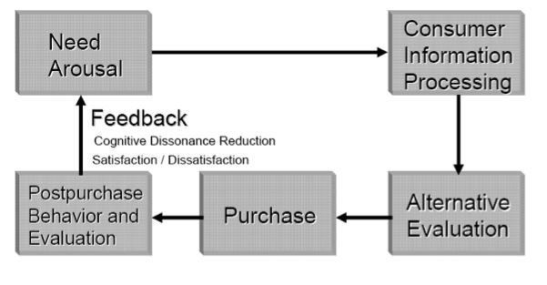
One of the oldest model to understand sales strategy based on consumer behavior was developed in 1898 by Elmo Lewis, an advertising strategist, called AIDA. It stands for awareness, interest, desire, and action. AIDA model has been used to define marketing funnel to understand customers’ buying stages as shown in Figure 10.3.
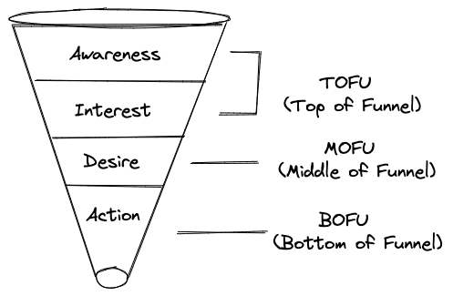
Consumer behavior has become increasingly complex with the increasing impact of digital technologies in the marketplace. Hence, especially in a digital marketing environment, marketers are interested in the consumer purchase journey that captures a process that consumers go through, across all stages and touchpoints that make up the consumer experience. Consumer experience is a multidimensional construct that involves cognitive, emotional, behavioral, sensorial, and social components. Accordingly, marketers instead of marketing funnel use consumer purchase map to understand consumer purchase journey to enhance consumer experience at each and every stage via multiple touchpoints. A consumer purchase map consists of details of decision paths and key interactions customers encounter with a brand as they move through the complex purchase process. Figure 10.4 shows customer journey map for Ikea. A well crafted customer journey map provides a gateway into customers’ minds, helping brands to understand and address customers’ pain points thereby providing them with superior customer experience.
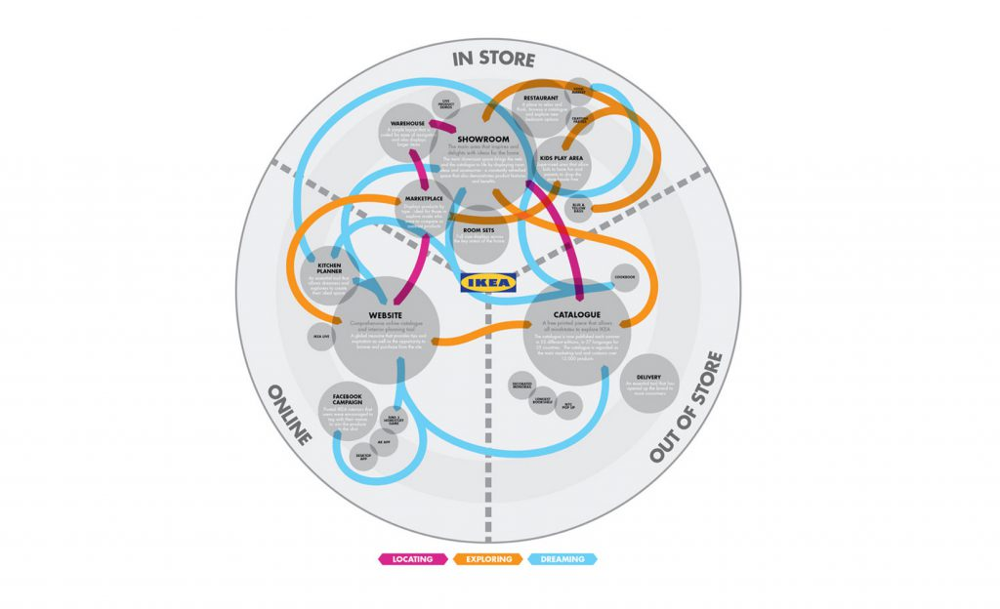
Customer heterogeneity is an important concept in consumer behavior. It means all customers differ. Customer heterogeneity captures the variation among customers in terms of their needs, wants, responses, and behaviors. marketers use individual differences, life experiences, functional needs, self-identity, and marketing activities to explain customer heterogeneity. The core objective of a quintessential marketing strategy of segmentation, positioning and targeting (STP) is to address customer heterogeneity. Figure 10.5 illustrates this concept.
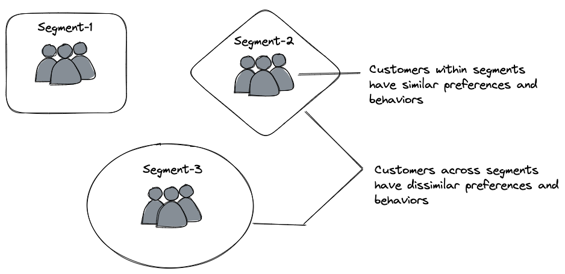
10.3 Relationship Marketing
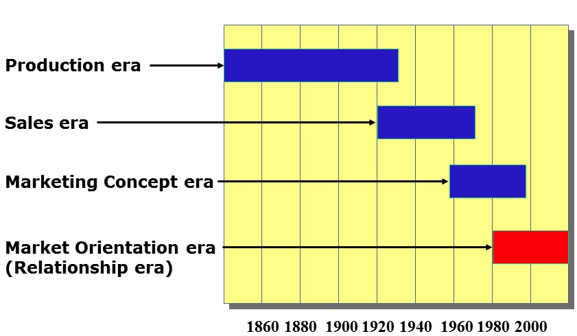
Figure 10.6 shows the evolution of marketing. The focus of current marketing strategies is on customers and building relationship with them. In 2004, American Marketing Association followed the following definition of marketing that emphasized on relationship building.
Marketing is an organizational function and a set of processes for creating, communicating, and delivering value to customers and for
managing customer relationshipsin ways that benefit the organization and its stakeholders.
Firms create value by focusing their strategies on two dimensions: transactional and relational. Long-lasting firm value is an outcome of relational marketing.
Relationship marketing is the process of identifying, developing, maintaining, and terminating relational exchanges with the purpose of enhancing performance.
The objective of relationship marketing is to optimize customer lifetime value (LTV) rather than per customer transaction. Customer LTV can be captured either using past customer value or future customer value.
For a customer \(i\), if we know her gross contribution margin, \(GC\), for all the past time periods, \(t = \{1,...,T\}\), then the past customer value, \(PTV\) is:
\[ PTV = \sum_{t=1}^{T}GC_{it} \times (1+r)^t, \] where \(r\) is the interest rate.
However, firms are often interested in the future value of their customers. Note that the value that will be received in future is discounted at current time period due to uncertainty and consumer psychology. Let’s assume \(\delta\) is the discount rate. Therefore, for a customer \(i\), if we assume her future gross contribution margin, \(GC\), for all the future time periods, \(t = \{1,...,T\}\), then the future customer value or simply the customer life time value, \(LTV\) is:
\[ LTV = \sum_{t=1}^{T}GC_{it} \times \left(\frac{1}{1+\delta}\right)^t \] Next, note that firms are not sure about the future contributions from consumers. It depends on what is the retention rate, \(Rr\). Let’s assume that retention rate remains constant over time. Then, factoring in this information, the life time value becomes:
\[ LTV = \sum_{t=1}^{T}GC_{it} \times \left(\frac{Rr}{1+\delta}\right)^t \]
Let’s assume \(CAC\) is the customer acquisition cost.5 Factoring in this information, the life time value becomes:
\[ LTV = \left(\sum_{t=1}^{T}GC_{it} \times \left(\frac{Rr}{1+\delta}\right)^t\right) - CAC \] If contribution margin is constant over time, i.e., \(GC_{it} = GC_{i} \text{ } \forall \text{ } t\in\{1,...,T\}\) then we can simplify the above equation over the infinite time horizon, i.e., \(T=\infty\).
Let’s assume the first term is denoted by \(S\) such that:
\[ \begin{equation} \begin{split} S &= \sum_{t=1}^{\infty}{GC_{i} \left(\frac{Rr}{1+\delta}\right)^t}\\ &= \sum_{t=1}^{\infty}{GC_{i} (a)^t}\\ \end{split} \nonumber \end{equation} \]
where
\[ \begin{equation} a=\frac{Rr}{1+\delta} \nonumber \end{equation} \]
Now expanding the sum \(S\) we have:
\[ \begin{equation} S=GC_{i}(a)^1+GC_{i}(a)^2+GC_{i}(a)^3+....\infty \nonumber \end{equation} \]
Multiplying both sides of this equation with \(a\) we get:
\[ \begin{equation} aS=GC_{i}(a)^2+GC_{i}(a)^3+GC_{i}(a)^4+....\infty \nonumber \end{equation} \]
Subtracting \(aS\) from \(S\) we get:
\[ \begin{equation} \begin{split} S-aS= & GC_{i}(a)^1+GC_{i}(a)^2+GC_{i}(a)^3+....\infty\\ & \qquad \qquad -GC_{i}(a)^2-GC_{i}(a)^3-....\infty\ \end{split} \nonumber \end{equation} \]
Thus we have:
\[ \begin{equation} S-aS= GC_{i}(a) \nonumber \end{equation} \]
We get sum \(S\) as:
\[ \begin{equation} S= \frac{GC_{i}(a)}{1-a} \nonumber \end{equation} \]
The term \(1-a\) is:
\[ \begin{equation} \begin{split} 1-a &= 1-\frac{Rr}{1+\delta}\\ &= \frac{1+\delta-Rr}{1+\delta} \end{split} \nonumber \end{equation} \]
Substituting \(a\) and \(1-a\) in \(S\) we get:
\[ \begin{equation} \begin{split} S &= \frac{GC_{i}(a)}{1-a}\\ &= GC_{i} \times \frac{Rr}{1+\delta} \times \frac{1+\delta}{1+\delta-Rr}\\ &= GC_{i}\left(\frac{Rr}{1+\delta-Rr}\right) \end{split} \nonumber \end{equation} \]
Thus, the life time value \(LTV_{i}\) of customer \(i\) is:
\[ \begin{equation} LTV_{i}=GC_{i}\left(\frac{Rr}{1+\delta-Rr}\right) - CAC \nonumber \end{equation} \]
Thus we see that CLV is simply the consumer \(i\)’s gross margin, \(GC_{i}\) times a margin multiplier \(\left(\frac{Rr}{1+\delta-Rr}\right)\).
Investors are often interested in LTV/CAC ratio to evaluate early-stage companies or startups. The ratio tells how much a company receives from a customer for every $1 spent to acquire her.
- \(\frac{LTV}{CAC} \sim 3.0 \times\): Ideal target range. Considered as reasonably profitable. You are generating three times the value of acquisition from each new customer.
- \(\frac{LTV}{CAC} < 1.0 \times\): Considered as unsustainable, cash burner, unable to monetize. It costs as much to acquire new customers as they spend on your product. It is time to refine your sales, acquisition, and pricing strategies.
- \(\frac{LTV}{CAC} > 5.0 \times\): Red flags. Investors may think the company has missed some growth opportunities. Each customer to the company is worth more than the onboarding costs. The company can afford to allocate more resources to marketing.
This metric takes into account the time a company needs to pay back the cost of acquiring a customer.
Average startup has payback period of 15 months based on gross margin.
Shorter payback time indicate growth potential in startups as less working capital is needed for marketing.
For startups, this is a good metric as it is hard to figure out the LTV of customers due to product changes and variations in customer adoption.
10.4 Customer Centricity
Marketing strategies have evolved from being product-centric to customer-centric. Customer centricity is about understanding how not all customers are created equal, and aligning marketing resources to meet the needs and wants of most profitable segments. It is about value-addition rather than value-extraction.
The opportunities to use customer analysis to change behavior go way, way beyond what is in the marketing domain — it goes to how we think about profitability, how we align channels, how we align the service propositions, how we align the operational experience, and how we understand which elements of products or categories are good for acquiring and retaining customers.
The difference between product centric and customer centric business models are as follows:
| Focus | Product Centric | Customer Centric |
|---|---|---|
| Strategy | Better product | Better customer solutions |
| Culture | Product & sales | New solutions for customer needs |
| Process | NPD6 | Facilitating new customer experience |
| Value | Sales & profitability | Long-lasting customer relationship & CLV |
Customer centricity is based on the notion that the best customers, the ones you should focus on, is the ones with the highest customer lifetime value. Thus, the focus is on value per acquisition instead of cost per acquisition.
For most companies, it is a gross error to develop a marketing program aimed at the “average customer.” Today such a consumer, or such a company, hardly exists. In short, the company that is not alert to the customers’ needs and the changing complexities of marketplaces is inviting disaster.
10.5 Business Environment
External factors influence business performance. Therefore, despite firms not having control over them, external factors comprising of competitive, regulatory, economic, social, and technological affect consumer behavior and firm performance. Marketing is the external eye of a firm that constantly scans the external business environment for identifying and explaining trends (see Figure 10.7).
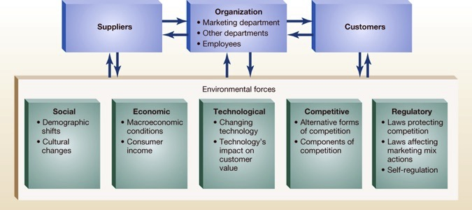
Following are some of the tools to scan the external environmental forces (see Figure 10.11).
10.5.1 SWOT analysis
You can use swot analysis to assess advantages and disadvantages faced by the client (see Figure 10.8).

10.5.2 Growth strategy
BCG matrix can be used to analyze the business portfolio of your client (see Figure 10.9).
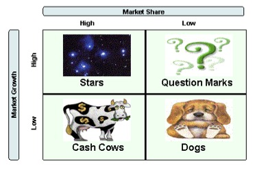
You can also use hedgehog (fox knows many things, but the hedgehog knows one big thing) and blue ocean (can we go outside and swim in the blue ocean) analyses to examine business expansion strategy (see Figure 10.10).
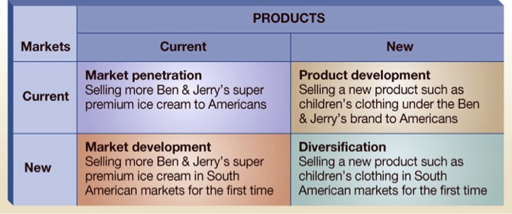
Marketers can also create value and grow from nothing by deeply understanding consumer behavior. Such a strategy is called black hole strategy.
Black hole strategy is about finding hidden opportunities to change behavioral patterns of people who are used to doing things in a particular way or not doing them at all.
Example: According to the latest Stack Overflow research, a large percentage of developers learned to code on their own, and only about 40% cited online courses as the learning method. What will be the most prominent educational platform? The one that will stop selling online courses and make a platform that helps self-education.
10.5.3 Porter’s five forces
Porters five forces could be used to understand the competitive landscape faced by the client.
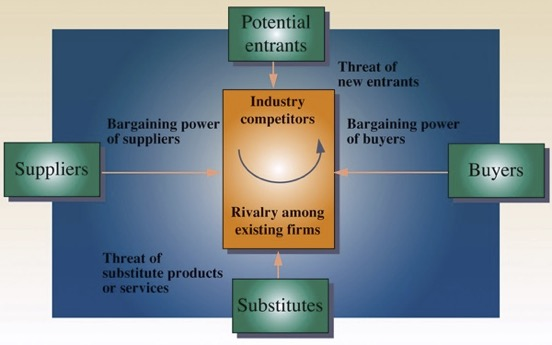
At the heart of any marketing models dealing with competitive analysis lies the ratio \(\frac{(focal)}{(focal+others)}\), which captures the effects of \(focal\) variables on market performance (e.g., market share, purchase probability). The ratio is a formulation of bringing competitive effects into the model by simple normalization.
10.5.4 Mystery shopping
Mystery shopping is an investigative marketing technique to assess the quality of customer experience at competitors’ locations by visiting. It is the most basic form of market research.
Mystery shopping is a useful market research tool in service sector (e.g., banks, restaurants, shops, travel agencies, airlines, car dealer).
10.6 Digital Marketing
Digital marketing explores the changing nature of traditional areas of marketing (such as product, pricing, promotion, and place) due to major impact of digital technologies (internet, digital computing tools, hardware, software), online networks (social media for communication and connection, digital platforms for distribution), information (information goods, quality of signal), and attention (plethora of information cause scarcity of attention).
How digital technologies have changed marketing landscape?
- Lowered search costs for customers.
- Lowered marginal cost of digital goods (anything that can be represented as bits and bytes are called digital goods), i.e., certain digital goods can be replicated at no costs.
- Lowered transportation cost of digital goods.
- Lead to the proliferation of individual-level data, enabling the marketer to do personalization and targeting at a much more granular level.
- Lowered cost of firms’ reputation.
- Enabled proliferation of social networks at a massive scale.
- Lead to explosion of information.
- Created scarcity of attention.
These major impacts of digital technologies have changed marketing fundamentally. These impacts are felt at both sides: firm and consumers. Digital technologies have empowered customers. Therefore, for brands to succeed in digital marketing environment, it is essential for them to drive brand-related conversations in consumer-space rather than in brand-space. Furthermore, brands need to constantly improve and refine their digital marketing strategies to build affect both transactional and relational dimensions of the customer-firm relationship.
In today’s technology driven marketplace, a strong digital marketing strategy could become a question of survival for many firms. In industry projects, you may be dealing with the following types of clients’ digital marketing strategy: social media marketing, multichannel marketing, search engine marketing, search engine optimization, email marketing, online advertising, content marketing, website marketing, mobile marketing, marketing platforms, online brand community.
10.7 Data-driven Marketing
Data is taking a central role in organizations to make decisions. This process is termed as data-driven decision-making. In marketing, decisions relating to customer relationship management, personalization, marketing mix, automation, optimization, and customer privacy are driven by data. Such an approach to data-driven marketing provides companies with a competitive advantage and improved financial performance. Figure 10.12 shows a framework of data driven marketing.
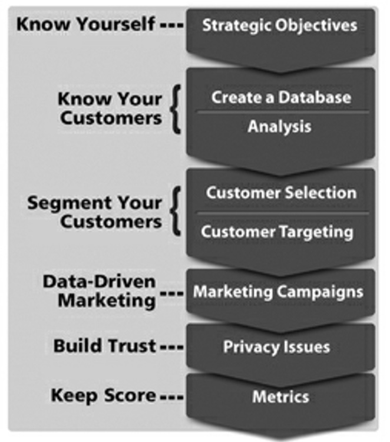
Data-driven marketing is carried out using market research and marketing analytics. Market research helps marketers to understand the market, i.e., customers’ needs and wants, which subsequently feeds into critical marketing operations: segmentation, targeting, and positioning.
But, when you think of 42% of startups failing due to not meeting market needs, you question the efficacy of market research. That’s when you realize the importance of marketing analytics. Market research will provide you with metrics that primarily serve as lagging indicators, whereas metrics coming from marketing analytics are often leading indicators.
Marketing analytics involves collection, management, and analysis — descriptive, diagnostic, predictive, prescriptive and cognitive — of data to obtain insights into marketing performance, maximize the effectiveness of instruments of marketing control, and optimize firms’ return on investment (ROI).
Marketing analytics helps in capturing all the relevant market data to be integrated, analyzed, and interpreted to evaluate all options for growth. It helps in modeling and capturing interdependence in marketing mix (product, price, place, and promotion), enabling firms to consider multiple options and their associated risks. To that end, marketing analytics helps firm in achieving three goals: attribution (the process of quantifying the contribution of each element of marketing mix), optimization (run business scenarios using predictive modeling to assess efficacy of different marketing mix strategies), and allocation (real-time redistribution of limited resources across marketing activities based on optimization).
Thus, marketing analytics leads to action and tells you the reason why, ultimately helping firms to grow revenue, charge higher prices, and win against the competition.
10.8 Strategies for Startups
Sometimes you may work with startups as a part of your industry project. Strategies for startups will be bit different that established firms. Here we describe some important concepts to understand and quantify the success of startups.
10.8.1 Unit Economics
For startups, the question of profitability is a difficult one to answer. Therefore, to simplify the complexity of measuring profitability, the focus should be on unit economics.
Unit economics is measuring profit on a per unit basis. The unit will be customer.
By linking the direct revenues and costs to per unit (per customer), you’ll be able to answer one critical question: can you make more profit from a customer than the total cost of acquiring them? If the answer is no, startup may not survive.
10.8.2 Blitzscaling
Blitzscaling is aggressive business strategy when you need to grow very quickly. The level of risk in blitzscaling far exceeds the risk taken by a company going through normal and rational process of scaling up.
It’s the science and art of rapidly building out a company to serve a large and usually global market, with the goal of becoming the first mover at scale.
It is based on the idea of military tactics of blitzkrieg. Before blitzkrieg emerged as a military tactic, armies didn’t advance beyond their supply lines, which limited their speed. The theory of the blitzkrieg was that if you carried only what you absolutely needed, you could move very, very fast, surprise your enemies, and win. Once you got halfway to your destination, you had to decide whether to turn back or to abandon the lines and go on. Once you made the decision to move forward, you were all in. You won big or lost big.
Blitzscaling involves both offensive and defensive marketing strategies. For online businesses, where margins are low, volume matters. Therefore, they employ all sorts of marketing strategies to scale it up quickly. Businesses can scale along three dimensions.
- Grow revenue
- Grow customer base
- Grow organization
Strategies for blitzscaling requires freedom from normal business rules. Figure 10.13 show the growth in Facebook as a results of bltizscaling.
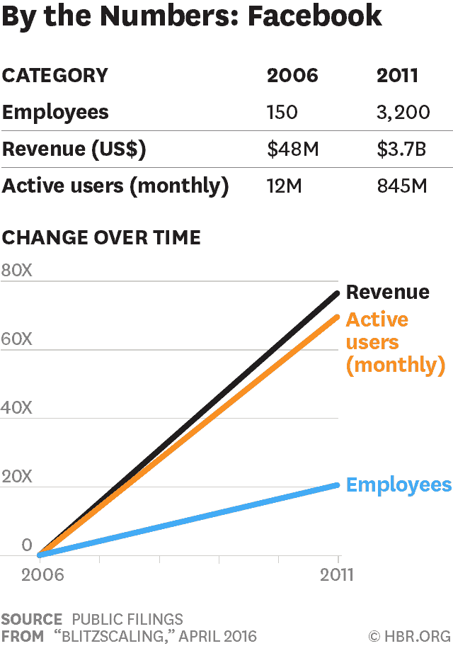
10.8.3 Minimum viable product
A primary reason of startup failure is "no market need." To avoid such a trap, startups often comes up with a minimum viable product (MVP), which is a proof of concept of their ideas.
An MVP is the version of a new product that allows the team to gather the maximum amount of proven customer knowledge with the least amount of effort.
However, MVP doesn’t have to be a product. You could consider it as a repeated process to identify the riskiest assumption, find the smallest possible experiment to test that assumption, and use the result of the experiment to improve the idea. Entrepreneurs often make the following risky assumptions.
- What consumers are looking for
- How the design should work
- What marketing strategy to use
- What architecture will work most efficiently
- Which monetization strategy will make it sustainable
- Which laws and regulations have to complied with
MVP allows startups to test these assumptions by putting their products in front of real users as quickly as possible.
You can relax this assumption when dealing with non-profit organizations.↩︎
Depending on various cases, you can use different operationalization of market size: total population, potential market, available market, qualified available market, target market, and penetrated market.↩︎
Maslow’s hierarchy of needs provides five basic human motivations that drive their behavior.↩︎
Technically, a free market is an economic system where prices of economic goods are determined by supply and demand expressed by market participants, i.e., sellers and buyers.↩︎
\(CAC = \frac{\text{Toal Sales and Marketing Expenses}}{\text{\# of New Customers Acquired}}\). Companies sometimes report blended \(CAC\) that factor in organic customer acquired in the denominator of \(CAC\) formula.↩︎
New Product Development↩︎